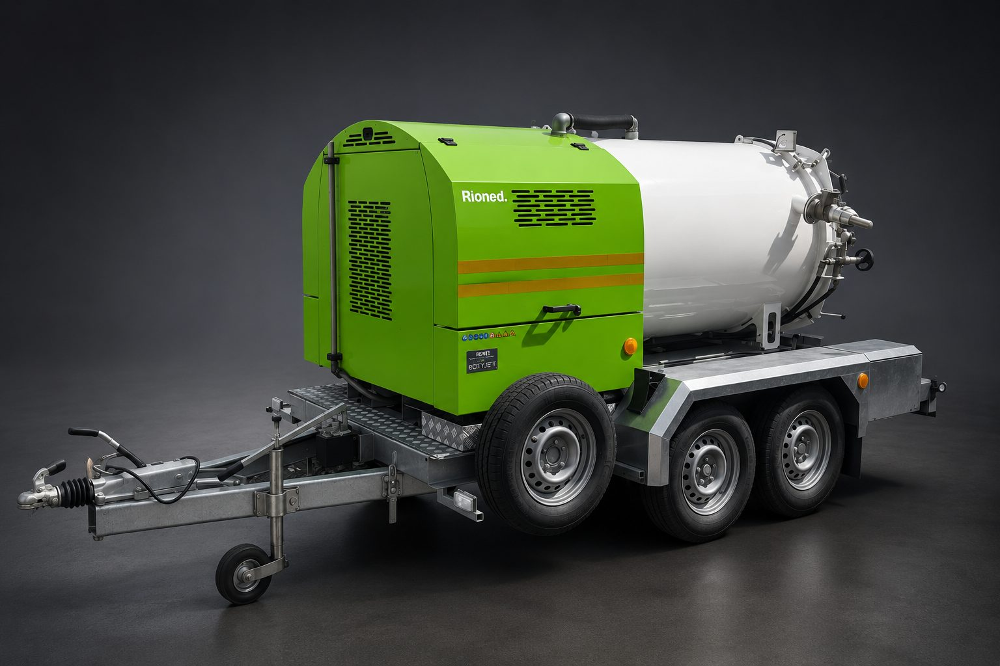
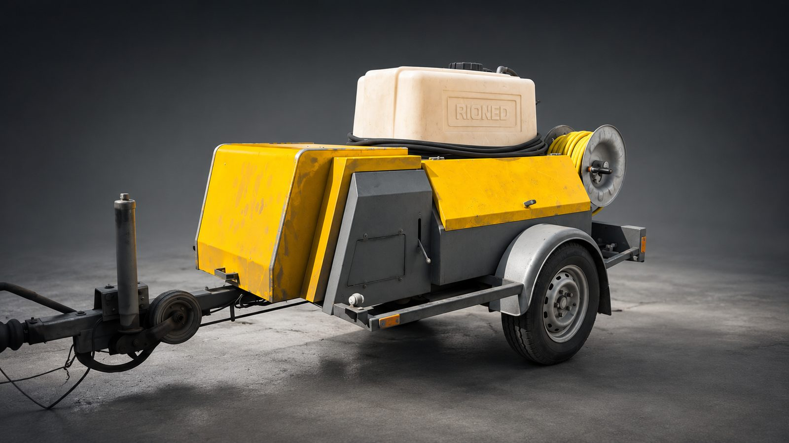

Čištění střešních žlabů a svodů
Vyčistíme žlaby a svody od listí, mechu a nánosů. Předejdete zatékání i poškození fasády.
Nabízíme komplexní čištění a údržbu pro domácnosti, firmy, obce i průmyslové objekty v okolí Frenštátu pod Radhoštěm. Vlastní technika, rychlá domluva, férová cena.
Ozvěte se a domluvíme se na všem potřebném — termín, cena, místo.
Devět specializovaných služeb — od střešních žlabů až po kamerovou inspekci kanalizace. Vlastní stroje a zkušený tým.
Vyčistíme žlaby a svody od listí, mechu a nánosů. Předejdete zatékání i poškození fasády.
Vodním paprskem o vysokém tlaku odstraníme řasy, mech i nečistoty z velkých ploch.
Profesionálně odstraníme graffiti z fasád, betonu a dalších povrchů bez poškození podkladu.
Vyřešíme i zarostlé a ucpané potrubí. Šetrné k materiálu, účinné proti tukům a usazeninám.
K dispozici je fekální vůz s nádrží 1,5 m³ pro vývoz odpadních vod a septiků.
Vyčistíme bagry, nakladače i další stavební techniku přímo na vašem pracovišti.
Odvezeme obsah lapolu (odlučovače tuků/ropných látek) v souladu s legislativou.
Důkladné vyčištění odlučovače včetně kontroly funkčnosti — připraveno na další provoz.
Revize kanalizace inspekční kamerou se záznamem. Najdeme příčinu závady přesně a rychle.
Potřebujete něco z výše uvedeného? Stačí jeden telefon.
Zavolat 731 514 647Žádné prostředníky, žádné dlouhé čekání. Domluvíte se přímo s lidmi, kteří k vám pak přijedou.
Od čištění žlabů přes tlakové mytí až po kamerovou inspekci kanalizace — vše vyřešíme z jednoho místa.
Fekální vůz 1,5 m³, vysokotlaké zařízení, inspekční kamera. Žádné půjčování, žádné prodlevy.
Pracujeme pro domácnosti, firmy, obce i průmyslové objekty. Zakázku přizpůsobíme vašim potřebám.
Vše po telefonické domluvě — zavoláte, řekneme cenu a termín, přijedeme. Bez zbytečné byrokracie.
Žádné půjčování ani prostředníci — techniku máme přímo u nás, takže přijedeme rychle a víme přesně, jak s ní pracovat.

Nádrž o objemu 1,5 m³ pro vývoz odpadních vod, septiků a lapolů. Tažný přívěs umožňuje rychlý zásah i v hůře přístupných lokalitách.

Profesionální vysokotlaké zařízení Rioned na mobilním podvozku. Vyřeší ucpané potrubí, tukové usazeniny i nánosy v kanalizaci a poradí si s mytím rozsáhlých ploch.
Jsme tady doma. Znalost regionu znamená rychlejší příjezd, lepší orientaci v terénu a férové ceny bez umělých příplatků za dopravu.
Zavolat a domluvit termínOzvěte se a domluvíme se na všem potřebném — termín, místo i přesný rozsah prací.
731 514 647